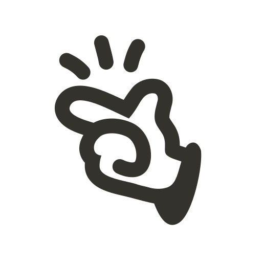

Manus slide 36, five directions
The internal-testing results in the Clover deck’s language. Every number is verbatim; nothing is invented. Each direction names the Clover slide it borrows. Replay to watch the one-by-one entrance and the numbers count up.
Moves to the talk track: The hypothesis line and the four "At launch" measures.
Internal testing already backs the hypothesis on clarity and retention.

Retention, newcomers in internal testing
Clarity on where to start
Time on site
Relevance of picks, power users
Live data from internal testing users at Manus after the AI-guided architecture was rolled out to them. The redesign is approved and in production. It has not yet launched publicly.
Moves to the talk track: The hypothesis line; the two group headings.
Internal testing already backs the hypothesis on clarity and retention.
Retention
Clarity on where to start
Time on site
Relevance of picks
Measured at launch
Paths started in the first sessionContributions submittedEvents hostedReturn visitsLive data from internal testing users at Manus after the AI-guided architecture was rolled out to them. The redesign is approved and in production. It has not yet launched publicly.
Moves to the talk track: Nothing cut; the long footnote stays as the grey italic note.
Internal testing already backs the hypothesis on clarity and retention.
Guidance on arrival raises clarity and retention
Newcomers can find a way in
Power users have a place to be seen
Live data from internal testing users at Manus after the AI-guided architecture was rolled out to them. The redesign is approved and in production. It has not yet launched publicly.
Moves to the talk track: The four "At launch" measures and the group headings.
Internal testing already backs the hypothesis on clarity and retention.
Retention
Clarity on where to start

Hypothesis
Guidance on arrival raises clarity and retention
Time on site
Relevance of picks
Live data from internal testing users at Manus after the AI-guided architecture was rolled out to them. The redesign is approved and in production. It has not yet launched publicly.
Moves to the talk track: The hypothesis line and the "At launch" measures.
Internal testing already backs the hypothesis on clarity and retention.
Retention among newcomers in internal testing
Clarity on where to start
Time on site
Relevance of picks
Live data from internal testing users at Manus after the AI-guided architecture was rolled out to them. The redesign is approved and in production. It has not yet launched publicly.